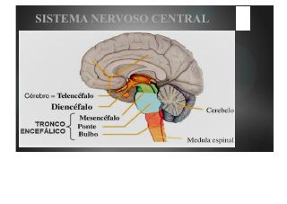

MATERIAL DE REVISÃO · 49 PRANCHAS
Seu cérebro
em foco.
Aprenda neuroanatomia por reconhecimento, repetição e contexto — uma estrutura de cada vez.

CÓRTEX
TRONCO
01sistema nervoso
central
CONTEÚDO DISPONÍVEL NO PDF
PDF transformado em treino
◒ARQUIVO-BASE
49
pranchas visuais
Todas as páginas estão no atlas
✦BANCO DE TREINO
115
questões disponíveis
fácil · médio · difícil
♨ORGANIZAÇÃO
10
blocos temáticosCOMPL
crânio · coluna · SNC · vasos
BLOCO EM DESTAQUE
Tronco encefálico
P. 28–30Reconhecendo o cerebeloPáginas 28–30 · mesencéfalo e cerebelo
DESAFIO DO ATLAS
1 minuto, 1 estrutura
ϟIdentifique uma estrutura das pranchas e confira sua resposta no treino.
TEMADIFICULDADE
QUESTÃO 01 / 115NÍVEL · BASE
TRONCO ENCEFÁLICO
Carregando questão…
ATLAS VISUAL
Veja. Nomeie. Lembre.
As imagens principais do material organizadas para revisão rápida.
MAPA DO CONTEÚDO
Escolha um território.
Avance por blocos curtos e conecte estruturas.